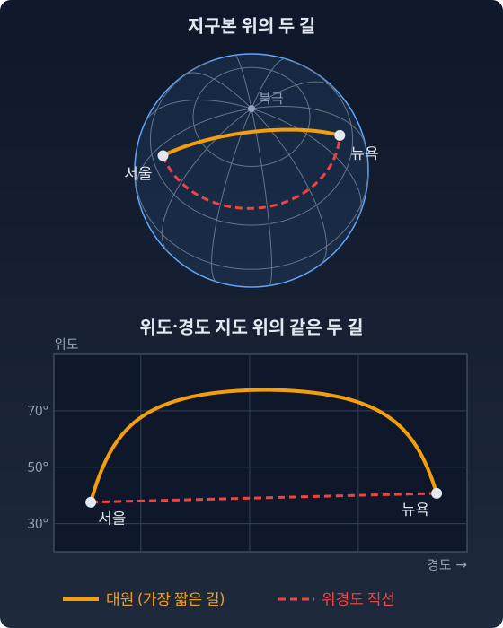
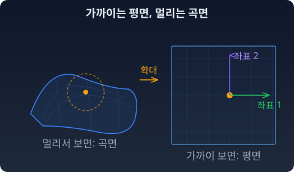
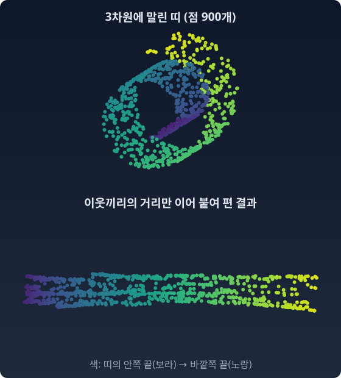

구부러진 땅
질문 하나에서 시작하자. θ를 한 걸음 옮기는 것이 어디서나 같은 크기의 변화를 만드는가? σ가 작을 때의 한 걸음과 σ가 클 때의 한 걸음이 같은가?
같지 않다. 뒤에서 숫자로 확인한다. 그런데 여기서 곧장 "그러니 이 공간은 휘었다"고 말하고 싶어진다. 그 결론은 서두른 것이다. 종이 위에 극좌표를 그려도 바깥쪽 한 칸은 안쪽 한 칸보다 길다. 그래도 종이는 평평하다.
그러면 "휘었다"는 말은 대체 무엇을 기준으로 하는가. 이 장은 그 질문을 따라간다. 먼저 좌표를 붙인다는 것이 무엇인지부터 보자.
매니폴드: 가까이서는 평면인 공간
θ를 움직이면 분포가 바뀌고 η를 움직여도 분포가 바뀐다. 두 좌표계가 르장드르 변환으로 연결된다는 건 알겠다. 그런데 이 좌표들이 사는 공간은 대체 어떤 모양인가? 평평한가? 둥근가? 어딘가에 구석이 있을까? 이 물음은 우리가 매일 쓰는 지도에서 먼저 만난다.
지구본과 세계지도 — 가까이서는 평면, 멀리서는 곡면
지구는 구면이다. 그런데 우리는 평면 지도로 산다. 서울 근처에서는 지도가 꽤 정확하다. 택시 타고 강남에서 종로까지 가는 데 지구가 둥글다는 사실은 아무 상관이 없다. 그런데 서울에서 뉴욕까지의 최단경로를 찾으려면? 평면 지도 위의 직선은 최단경로가 아니다. 지구 중심을 지나는 평면으로 지구를 자른 큰 원, 곧 대원(great circle)을 따라가는 길이 최단경로다.
파이썬
서울과 뉴욕을 잇는 두 길의 길이를 잰다. 하나는 대원, 하나는 (위도, 경도) 좌표에서 곧게 그은 선이다.
import numpy as np
R = 6371.0 # 지구 반지름 (km)
def to_xyz(lat, lon):
la, lo = np.radians(lat), np.radians(lon)
return np.stack([np.cos(la) * np.cos(lo), np.cos(la) * np.sin(lo), np.sin(la)], -1)
seoul, nyc = (37.57, 126.98), (40.71, -74.01 + 360) # 태평양을 건너도록 경도를 이어 붙인다
# (1) 대원: 두 점 사이 중심각 × 반지름
A, B = to_xyz(*seoul), to_xyz(*nyc)
great = R * np.arccos(A @ B)
# (2) (위도, 경도) 좌표에서 곧은 선을 지구 위에 올려 놓고 길이를 잰다
t = np.linspace(0, 1, 100_001)[:, None]
path = to_xyz(seoul[0] + (nyc[0] - seoul[0]) * t[:, 0], seoul[1] + (nyc[1] - seoul[1]) * t[:, 0])
straight = R * np.sum(np.arccos(np.clip(np.sum(path[1:] * path[:-1], 1), -1, 1)))
# 대원이 가장 북쪽으로 올라가는 위도
n = np.cross(A, B); n /= np.linalg.norm(n)
print(f"대원 {great:,.0f} km 위경도 직선 {straight:,.0f} km 비율 {straight / great:.2f}")
print(f"대원의 최고 위도 {np.degrees(np.arccos(abs(n[2]))):.1f}°")
# 대원 11,052 km 위경도 직선 13,716 km 비율 1.24
# 대원의 최고 위도 77.4°
지도 위의 곧은 선은 24% 돌아가는 길이다. 대원은 북위 77도 가까이, 북극권 깊숙이 올라갔다 내려온다. 서울에서 뉴욕으로 가는 비행기가 지도 위에서 북쪽으로 크게 휘어 그려지는 까닭이다.

매니폴드는 이런 공간이다. 가까이서 보면 유클리드 공간 — 좌표를 붙이고 덧셈 뺄셈을 할 수 있다. 멀리서 보면 평면과 다를 수 있다 — 지도 위의 직선이 땅 위의 직선이 아닐 수 있다.
정리하면, 매니폴드란 "국소적으로는 평면처럼 좌표를 붙일 수 있지만, 전체적으로는 평면과 다른 모양일 수 있는 공간"이다.

θ와 η — 같은 땅의 두 지도
지수족(log p = θ·t(x) − F(θ) 꼴로 쓰이는 분포의 모임)의 두 좌표, 자연모수 θ와 기대모수 η(t(x)의 기댓값)를 떠올려 보자. 모수는 분포를 정하는 숫자다. 이것은 같은 지구본에 메르카토르 도법과 다른 도법(예: 정거원추도법)을 각각 입힌 것과 같다. 같은 땅인데 지도가 다르다. 두 지도가 겹치는 영역에서의 좌표 변환 규칙 — 그것이 η = ∇F(θ), 르장드르 변환이다. θ에서 η로 건너간 일은 결국 좌표 변환이었다.
ML에서: 매니폴드 가설 — 실제 데이터는 저차원에 산다
ML에서는 데이터가 저차원 매니폴드 위에 산다는 말을 자주 듣는다. 신경망이 구겨진 종이 뭉치를 펴듯 데이터를 편다는 비유도 그 하나다. 이제 매니폴드가 무엇인지 — “국소적으로 좌표를 붙일 수 있는 공간” — 를 알았으니, 그 말에 뜻을 붙일 수 있다. 매니폴드 가설은 실제 데이터가 고차원 공간 전체에 퍼져 있지 않고, 그 안의 저차원 매니폴드 위에 집중되어 있다는 경험적 주장이다.
종이비행기를 떠올리자. A4 용지는 2차원 평면이다. 접으면 3차원 공간 속에 존재하는 2차원 표면이 된다. 용지 위의 개미는 여전히 2차원을 걷는다. 데이터는 이 접힌 종이 위의 점이다. 종이 밖의 3차원 공간 대부분은 비어 있다.
관절 인형도 같다. 관절 인형의 자세는 3차원 공간에서 펼쳐지지만, 따로따로 움직일 수 있는 방향의 수(자유도)는 관절의 수뿐이다. 관절이 10개면 자유도는 10. 고차원 공간 속에 묻힌 10차원 매니폴드다.
언어 모델의 분포 — 심플렉스의 좁은 구석
실제 언어 모델의 어휘는 수만~수십만 개다. 어휘가 5만 개라고 하면 “다음 토큰” 분포는 심플렉스, 곧 합이 1인 확률 5만 개가 사는 49,999차원 초삼각형 위의 한 점이다. 그 위에 고르게 찍은 점은 거의 다 비슷한 모습이었다. 모든 칸이 1/n 근처이고, 가장 큰 칸도 (ln n)/n 정도라 어느 꼭짓점과도 멀며, 가장 작은 칸 하나가 1/n² 정도로 작아 경계의 면 가까이에 있다(고차원에서 고르게 뽑은 점이 거의 모두 이런 모습이 되는 현상, 측도의 집중).
실제 언어 모델이 내놓는 분포는 이런 "전형적인 점"과 전혀 닮지 않았다. 몇 개의 토큰에 확률이 몰린, 꼭짓점 쪽으로 치우친 분포가 흔하다. 매니폴드 가설은 그 위에 한 걸음 더 나아간 주장이다: 의미 있는 분포는 심플렉스 전체가 아니라 특정 구조를 가진 좁은 부분영역에 모여 있다. 고르게 뽑은 점들이 사는 곳과는 다른 곳에.
LoRA — 좁은 방향에 거는 베팅
LoRA(Low-Rank Adaptation, 낮은 랭크로 고쳐 쓰기)는 큰 모델을 미세조정할 때 가중치 행렬 W를 통째로 고치지 않는다. 변화 ΔW를 가느다란 두 행렬의 곱 BA로만 학습한다. 랭크(rank)는 행렬이 실제로 쓰는 독립된 방향의 수이고, 가느다란 두 행렬의 곱은 랭크가 낮다.
여기서부터는 비유다. LoRA의 낮은 랭크는 가중치 변화 행렬의 랭크이고, 엄밀히 말해 매니폴드의 차원과 같은 개념은 아니다. 그래도 발상은 닮았다. "쓸모 있는 변화는 전체 파라미터 공간의 아주 좁은 부분에 산다"는 베팅. 2021년 LoRA 논문(후(Hu) 등)은 파라미터가 1,750억 개인 GPT-3에서 학습할 숫자를 1만분의 1로 줄이고도, 모든 가중치를 고치는 미세조정과 같거나 나은 품질을 냈다고 보고했다. 그 베팅이 맞았다는 숫자이고, 매니폴드 가설이 가리키는 방향과 같다.
파이썬 — 스위스 롤
스위스 롤은 평평한 띠를 나선으로 만 것이다. 안쪽 층과 바깥쪽 층은 3차원에서는 가깝지만, 띠를 따라가면 멀다.
import numpy as np
# 스위스 롤: 평면 띠 (s, h)를 나선으로 말아 3차원에 넣는다
def roll(s, h):
return np.stack([s * np.cos(s), h, s * np.sin(s)], -1)
def arc_len(s1, s2, n=100_000): # 나선을 따라 잰 길이 (띠 위의 거리)
s = np.linspace(s1, s2, n)
return np.trapezoid(np.sqrt(1 + s**2), s)
s1, s2 = 1.5 * np.pi, 3.5 * np.pi # 한 바퀴 차이 나는 두 점, 같은 높이
p, q = roll(s1, 0.0), roll(s2, 0.0)
print(f"3차원 직선 거리 {np.linalg.norm(p - q):.2f}")
print(f"띠를 따라 잰 거리 {arc_len(s1, s2):.2f}")
# 3차원 직선 거리 6.28
# 띠를 따라 잰 거리 49.77
여덟 배 차이다. 바깥 공간의 자로 재면 두 점은 이웃이고, 데이터가 사는 띠 위에서 재면 멀리 떨어져 있다. 그리고 이 띠는 원기둥처럼 “말렸을 뿐” 안에서는 평평하다. 바깥에서 휘어 보이는 것과 안에서 휜 것은 다르다 — 뒤에서 볼 내재적 곡률의 이야기가 벌써 여기 있다.
그러면 말린 띠 위에 흩어진 점만 받았을 때, 띠 위의 거리는 어떻게 잴까? 2000년에 테넨바움(Joshua Tenenbaum), 드 실바(Vin de Silva), 랭퍼드(John Langford)가 낸 Isomap이 이 물음에 답했다. 아주 가까운 이웃끼리는 3차원 직선 거리를 그대로 믿고, 먼 두 점의 거리는 이웃에서 이웃으로 건너가는 가장 짧은 사슬의 길이로 잰다. 그렇게 얻은 거리를 가장 잘 지키도록 점들을 평면에 다시 놓으면 띠가 펴진다. 아래 그림은 논문의 스위스 롤 실험과 같은 구성을 직접 다시 돌린 것이다(점 900개, 이웃 9개. 논문의 그림을 옮긴 것이 아니다).

수확
“매니폴드 = 국소적으로 좌표를 붙일 수 있는 공간. 좌표는 지도일 뿐이다. 지도는 여러 장 있을 수 있다. θ와 η는 같은 곡면에 붙인 두 장의 지도였다.”
문제 1. 서울–부산 직선과 서울–도쿄 직선
서울–뉴욕에서는 (위도, 경도) 지도 위의 곧은 선이 대원보다 24% 길었다. 서울(37.57°N, 126.98°E)에서 부산(35.18°N, 129.08°E)까지, 그리고 도쿄(35.68°N, 139.69°E)까지도 같은 비교를 해 보라. (가) 두 경우 위경도 직선은 대원보다 몇 % 긴가? (나) 거리가 몇 배가 될 때 그 차이는 몇 배가 되는가? (다) 이 결과는 "가까이서는 평면"이라는 말과 어떻게 이어지는가? (위 파이썬의
nyc자리에 좌표를 넣으면 된다.)
함께 풀기

뉴욕이 24%였으니까 부산은 가까워도 몇 %는 돌아가겠죠. 같은 지도로 곧게 긋는 거니까요. 파이썬에 좌표만 바꿔 넣어 볼게요.

어, 부산은 대원 325.5 km, 위경도 직선도 325.5 km예요. 차이가 0.006%밖에 안 돼요. 도쿄는 대원 1,153 km에 0.078%고요.

지도는 똑같은데 왜 부산에서는 거의 안 틀릴까요? 거리와 차이를 같이 놓고 보세요.

거리는 1,153 ÷ 325.5 ≈ 3.5배인데 차이는 0.078 ÷ 0.006 ≈ 13배예요. 3.5² ≈ 12.5니까 차이는 거리의 제곱을 따라가요. 거리가 반이 되면 틀림은 4분의 1로 줄어요.

그래서 동네 지도는 평면으로 그려도 되는 거예요. 가까이 갈수록 틀림이 거리보다 훨씬 빨리 사라지니까요. 뉴욕 같은 먼 곳에서만 그 제곱이 커져서 24%가 된 거고요.
그래요. "가까이서는 평면"은 틀림이 0이라는 말이 아니라, 틀림이 거리의 제곱으로 작아진다는 말이에요. 1차까지는 평면과 같고, 차이는 2차에서 나와요.
보고서 그래프에서 곡선을 확대하면 직선처럼 보이는 거랑 같네요. 확대할수록 휜 티가 더 빨리 사라지고요.
문제 2. 동전 모형의 두 지도
앞면 확률이 p인 동전들의 모임을 생각하자. 이 모임에는 두 지도가 있다. 기대모수 η = p, 그리고 자연모수 θ = log(p/(1 − p))(로짓). (가) p = 0.5와 p = 0.99에서 θ를 0.1 옮기면 p는 각각 얼마나 움직이는가? (나) p = 0인 동전과 p = 1인 동전은 두 지도 가운데 어디에 찍히는가? (다) 두 지도는 같은 땅을 그린 것인가?
함께 풀기
코드로 돌렸어요. p = 0.5에서 θ를 0.1 옮기면 p가 0.02498 움직이고, p = 0.99에서는 0.00094 움직여요. 한 칸이 거의 27배 달라요.
미분하면 dp/dθ = p(1 − p)라서 0.25와 0.0099예요. 0.1을 곱하면 민준이 값과 거의 같아. 같은 땅인데 지도마다 한 칸의 크기가 곳마다 달라.
(나)는 η 지도가 더 커요. η 지도는 0부터 1까지 끝이 다 있는데, θ 지도는 p = 0.999가 θ = 6.9, p = 0.9999가 9.2라서 끝이 끝없이 멀어져요. 그러니까 η 지도가 동전을 더 많이 담는 거죠.
p = 1인 동전을 지수족의 꼴 log p = θ·t(x) − F(θ)로 적어 볼 수 있어요?

뒷면이 나올 확률이 0이면 log 0이 나와서 안 돼요. θ도 무한대가 돼야 하고요. 그러면 p = 0과 p = 1인 동전은 처음부터 이 모임에 없는 거예요. 땅은 열린 구간 (0, 1)이고, 두 지도 모두 그 땅을 빠짐없이 덮어요.

아, η 지도에서 0과 1은 땅 바깥 테두리였네요. 지도 종이가 땅보다 조금 컸던 거예요.
그래요. (다)의 답은 "같은 땅"이에요. 한 칸의 크기가 다른 건 지도를 그리는 방식 탓이고, 두 지도 사이의 번역 규칙이 p = 1/(1 + e−θ), 곧 르장드르 변환이 만든 η = ∇F(θ)예요.
해석학 시간에 열린 구간 (0, 1)과 실수 전체가 tan 같은 함수로 일대일로 이어진다고 배웠는데, 로짓이 바로 그 역할을 하네요.
문제 3. LoRA 행렬은 몇 차원에 사는가
4096 × 4096 가중치 행렬을 미세조정하면서 변화 ΔW를 B(4096 × 8)와 A(8 × 4096)의 곱 BA로만 학습한다. (가) 학습할 숫자는 몇 개이고, ΔW 전체 칸 수의 몇 분의 1인가? (나) 랭크가 정확히 8인 4096 × 4096 행렬들의 모임은 매니폴드다. 그 차원은 (가)의 숫자 개수와 같은가? (다) 랭크가 8보다 작은 행렬도 BA로 만들 수 있다. 그 행렬들은 이 모임의 어디에 있는가?
함께 풀기
B가 4096 × 8 = 32,768개, A도 32,768개라서 65,536개예요. ΔW 칸은 4096² = 16,777,216개니까 256분의 1이고요. 그러니까 LoRA가 사는 매니폴드는 65,536차원이죠.
B의 모든 숫자에 2를 곱하고 A의 모든 숫자를 2로 나누면 BA는 어떻게 돼요?
그대로예요. 어, 숫자는 전부 바뀌었는데 행렬은 같아요.
2만이 아니라 8 × 8 역행렬이 있는 G라면 뭐든 돼. (BG)(G⁻¹A) = BA니까. G는 8 × 8 = 64개 숫자로 정해지니까, 같은 ΔW를 주는 (B, A)가 64차원만큼 겹쳐 있어요. 그러면 ΔW들의 모임은 65,536 − 64 = 65,472차원이에요.
그래요. 랭크 r인 m × n 행렬들의 모임은 r(m + n − r)차원이에요. 8 × (4096 + 4096 − 8) = 65,472로 서연 학생 값과 같아요. 숫자 개수는 좌표 개수이고, 좌표가 점을 한 번씩만 가리킨다는 보장은 없어요.
(다)는 BA의 랭크가 7 이하로 떨어진 경우죠. 그런 행렬 근처에서는 모임이 매끈하게 펴지지 않아서 매니폴드의 조건이 깨져요. 그래서 문제가 "정확히 8"이라고 못박았던 거고요.

그러니까 LoRA가 줄인 건 숫자 개수이고, 변화가 사는 곳은 전체 1,677만 차원 안의 6만 5천 차원짜리 좁은 땅이네요. 본문의 "좁은 방향에 거는 베팅"이 그 땅이었어요.
보고서 분량을 "쪽수 × 쪽당 줄 수"로 적으면 20쪽 × 30줄이나 30쪽 × 20줄이나 같은 600줄인 거랑 같네요. 적는 숫자는 둘인데 실제로 정해지는 건 하나예요.